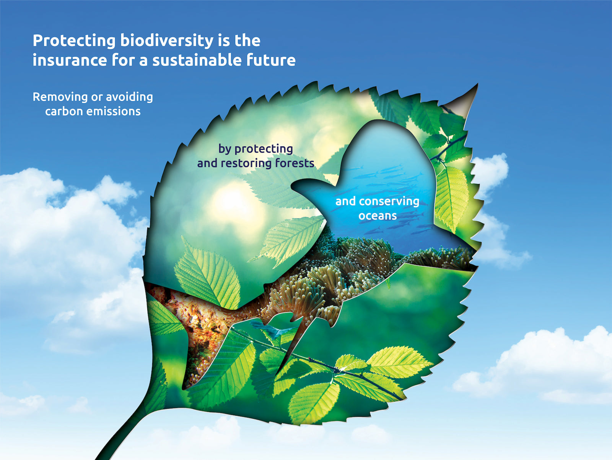
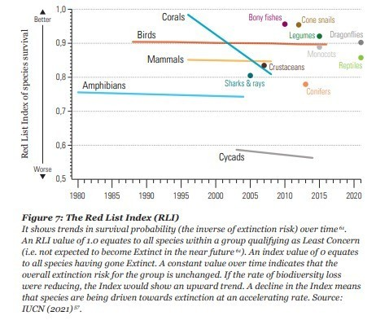
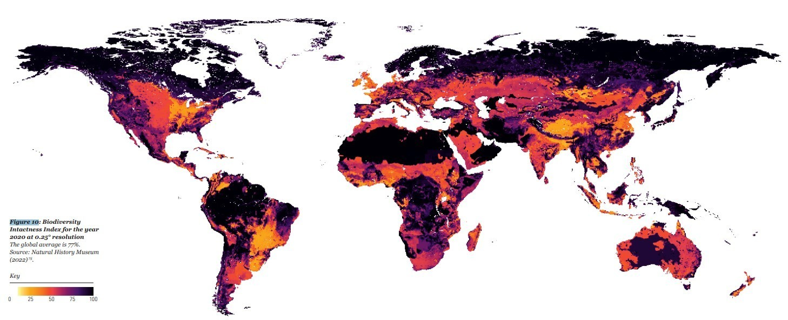
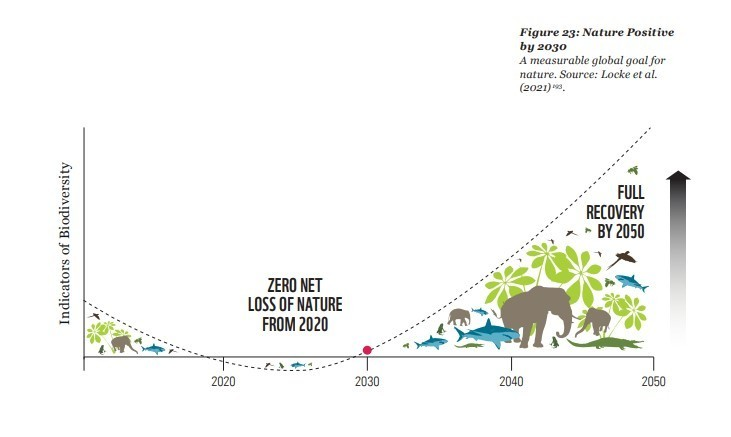

Diversity in Danger: Strategies for Biodiversity Protection
Biodiversity is the variety of life on Earth. It encompasses the rich tapestry of species, genes, and ecosystems that form the foundation of all life on our planet. Biodiversity is essential for human well-being, providing us with food, clean water, clean air, and medicine. It also plays a vital role in regulating the climate, preventing soil erosion, and protecting us from natural disasters. However, biodiversity is under threat. Human activities, such as habitat destruction, pollution, and climate change, are causing species to go extinct at an alarming rate. We are losing biodiversity at a rate that is 1,000 to 10,000 times faster than the natural rate of extinction. This is a major crisis that we need to address urgently.
Benefits of Biodiversity:
-
- Food Security
- Biodiversity is essential for food production. Over 75% of the world's food crops rely on animals and insects for pollination.
-
- Clean Water
- Biodiversity helps to purify water and prevent pollution. Wetlands, for example, act as natural filters, removing pollutants from water.
-
- Climate Regulation
- Biodiversity plays a vital role in regulating the climate. Forests, for example, help to absorb carbon dioxide and mitigate the effects of climate change.
-
- Medicine
- Biodiversity is a source of many medicines. Over half of the world's drugs are derived from natural sources, such as plants and microorganisms.
Threats to Biodiversity
-
- Habitat destruction
- Habitat destruction is the leading cause of biodiversity loss. Forests, wetlands, and other natural habitats are being destroyed for agriculture, development, and other purposes.
-
- Pollution
- Pollution is another major threat to biodiversity. Pollution from chemicals, fertilizers, and other sources can harm wildlife and disrupt ecosystems.
-
- Climate change
- Climate change is a major driver of biodiversity loss. Rising temperatures and extreme weather events are causing species to move or adapt, and some species are not able to survive the changes.
-
- Invasive species
- Invasive species are species that have been introduced to new areas, where they can outcompete native species and disrupt ecosystems.
India's Global Commitment to Biodiversity Conservation: A Look at International Agreements and Collaborative Initiatives
India, recognizing the global nature of biodiversity conservation, actively engages in international agreements and collaborative efforts to address the challenges faced by the planet's diverse ecosystems. A key player in the international arena, India has demonstrated its commitment to safeguarding biodiversity through participation in initiatives such as the Convention on Biological Diversity (CBD) and collaborative efforts with other nations.
Convention on Biological Diversity (CBD):
-
- Participation in CBD:
- India is a signatory to the Convention on Biological Diversity, a landmark international treaty established in 1992 during the Earth Summit in Rio de Janeiro. The CBD aims to promote the conservation of biological diversity, the sustainable use of its components, and the fair and equitable sharing of benefits arising from genetic resources.
-
- National Biodiversity Action Plan (NBAP):
- In alignment with its commitment to the CBD, India has developed and implemented the National Biodiversity Action Plan (NBAP). The NBAP outlines comprehensive strategies and actions to conserve and sustainably manage the country's diverse biological resources, addressing the CBD's objectives at the national level.
-
- CBD's Three Main Objectives:
- Conservation of Biological Diversity: India actively contributes to the global effort to conserve biodiversity by implementing measures outlined in its NBAP, protecting ecosystems, and conserving endangered species.
Sustainable Use of Components of Biological Diversity: India strives to balance the utilization of biological resources with their sustainable management, aligning with the CBD's goal of promoting responsible and ethical use.
Fair and Equitable Sharing of Benefits: India is committed to ensuring fair and equitable benefit-sharing from the utilization of genetic resources, especially with regard to traditional knowledge and practices of local communities.
Collaborative Efforts:
-
- South-South Cooperation:
- India actively engages in South-South cooperation, collaborating with other developing nations to share knowledge, expertise, and resources for biodiversity conservation. This collaborative approach fosters mutual learning and supports the implementation of conservation initiatives tailored to regional contexts.
-
- Bilateral Agreements:
- India has entered into bilateral agreements with several countries to promote biodiversity conservation and sustainable development. These agreements often involve the exchange of scientific information, technology transfer, and collaborative research projects.
-
- Regional Initiatives:
- India participates in regional initiatives aimed at addressing shared biodiversity challenges. Collaboration within regions, such as South Asia, promotes the development of coordinated strategies and the sharing of best practices for conservation and sustainable use of biological resources.
-
- Climate Change Collaboration:
- Given the interconnectedness of biodiversity and climate change, India collaborates with other nations on initiatives related to climate change adaptation and mitigation. This involves shared efforts to address the impacts of climate change on ecosystems and their biodiversity.
Conclusion
India's involvement in international agreements and collaborative efforts underscores its commitment to global biodiversity conservation. By actively participating in initiatives like the CBD and engaging in collaborative endeavors with other nations, India contributes to the collective effort to protect and sustain the planet's rich biological diversity. Continued cooperation, information exchange, and joint actions will be crucial for addressing the complex challenges posed by biodiversity loss on a global scale.
Species most under threat of extinction

Where biodiversity is most intact

Towards a nature-positive future
